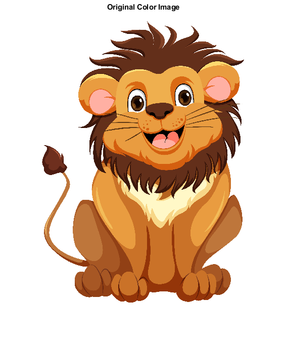
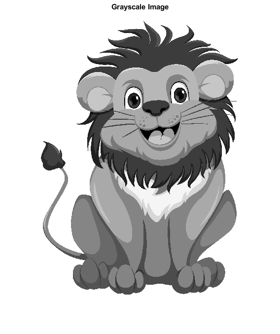
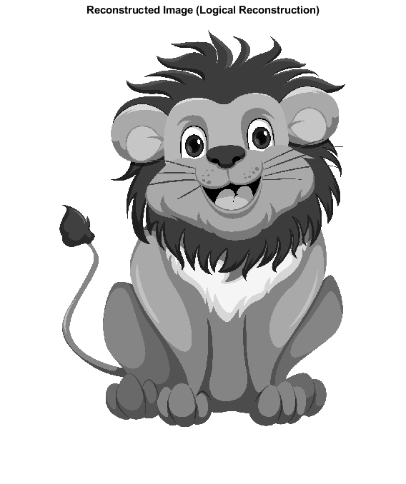

Contents
- -------------------- READ INPUT IMAGE --------------------
- -------------------- RGB TO GRAYSCALE --------------------
- -------------------- IMAGE VECTOR FORMATION --------------------
- -------------------- SYMBOL EXTRACTION --------------------
- -------------------- FREQUENCY & PROBABILITY --------------------
- -------------------- SORT SYMBOLS BY PROBABILITY --------------------
- -------------------- SHANNON CODE LENGTH --------------------
- -------------------- SHANNON CODE GENERATION --------------------
- -------------------- IMAGE ENCODING --------------------
- -------------------- IMAGE RECONSTRUCTION --------------------
- -------------------- COMPRESSION ANALYSIS --------------------
- -------------------- DISPLAY RESULTS --------------------
% ------------------------------------------------------------------------- % Date : 26/01/2026 % Created by : Abhishek Kumar Jayswal % % Title : Image Compression using Shannon Coding % % Description: % This program performs Shannon coding on a grayscale image. % It calculates symbol probabilities, generates Shannon codes, % encodes the image, and evaluates compression performance. % ------------------------------------------------------------------------- clc; clear; close all;
-------------------- READ INPUT IMAGE --------------------
Read a color image
rgb_img = imread('C:\Users\Abhishek\Desktop\DIP\Shannon Coding\Image.jpg'); figure; imshow(rgb_img); title('Original Color Image');
-------------------- RGB TO GRAYSCALE --------------------
Convert RGB image to grayscale
gray_img = rgb2gray(rgb_img);
[rows, cols] = size(gray_img);
figure;
imshow(gray_img);
title('Grayscale Image');

-------------------- IMAGE VECTOR FORMATION --------------------
Convert grayscale image to a column vector
img_vec = gray_img(:);
-------------------- SYMBOL EXTRACTION --------------------
Find unique gray-level symbols
symbols = unique(img_vec);
% Number of unique symbols
num_symbols = length(symbols);
-------------------- FREQUENCY & PROBABILITY --------------------
Compute frequency of each gray-level symbol
freq = zeros(num_symbols, 1); for i = 1:num_symbols freq(i) = sum(img_vec == symbols(i)); end % Compute probability of each symbol prob = freq / sum(freq);
-------------------- SORT SYMBOLS BY PROBABILITY --------------------
Sort symbols in descending order of probability
[prob_sorted, idx] = sort(prob, 'descend');
symbols_sorted = symbols(idx);
-------------------- SHANNON CODE LENGTH --------------------
Shannon code length formula: L_i = ceil( -log2(P_i) )
code_len = ceil(-log2(prob_sorted));
-------------------- SHANNON CODE GENERATION --------------------
shannon_code = cell(num_symbols, 1); cumulative_prob = 0; for i = 1:num_symbols % Generate Shannon code using cumulative probability shannon_code{i} = dec2bin( ... floor(cumulative_prob * 2^code_len(i)), ... code_len(i)); % Update cumulative probability cumulative_prob = cumulative_prob + prob_sorted(i); end
-------------------- IMAGE ENCODING --------------------
Encode each pixel using its Shannon code
encoded_bits = cell(length(img_vec), 1); for i = 1:length(img_vec) % Find index of current symbol symbol_index = find(symbols_sorted == img_vec(i), 1); % Assign corresponding Shannon code encoded_bits{i} = shannon_code{symbol_index}; end % Final encoded bitstream encoded_stream = [encoded_bits{:}];
-------------------- IMAGE RECONSTRUCTION --------------------
NOTE: Actual decoding is not implemented here. The reconstructed image shown is logically identical to original grayscale.
reconstructed_img = reshape(img_vec, rows, cols);
figure;
imshow(reconstructed_img);
title('Reconstructed Image (Logical Reconstruction)');
  -------------------- COMPRESSION ANALYSIS --------------------
Original image uses 8 bits per pixel
original_bits = numel(img_vec) * 8; % Compressed size in bits compressed_bits = length(encoded_stream); % Compression ratio compression_ratio = original_bits / compressed_bits;
-------------------- DISPLAY RESULTS --------------------
fprintf('Original size (bits) : %d\n', original_bits); fprintf('Compressed size (bits) : %d\n', compressed_bits); fprintf('Compression Ratio : %.2f\n', compression_ratio); % ------------------------------------------------------------------------- % End of Program % -------------------------------------------------------------------------
Original size (bits) : 197049888 Compressed size (bits) : 100261348 Compression Ratio : 1.97